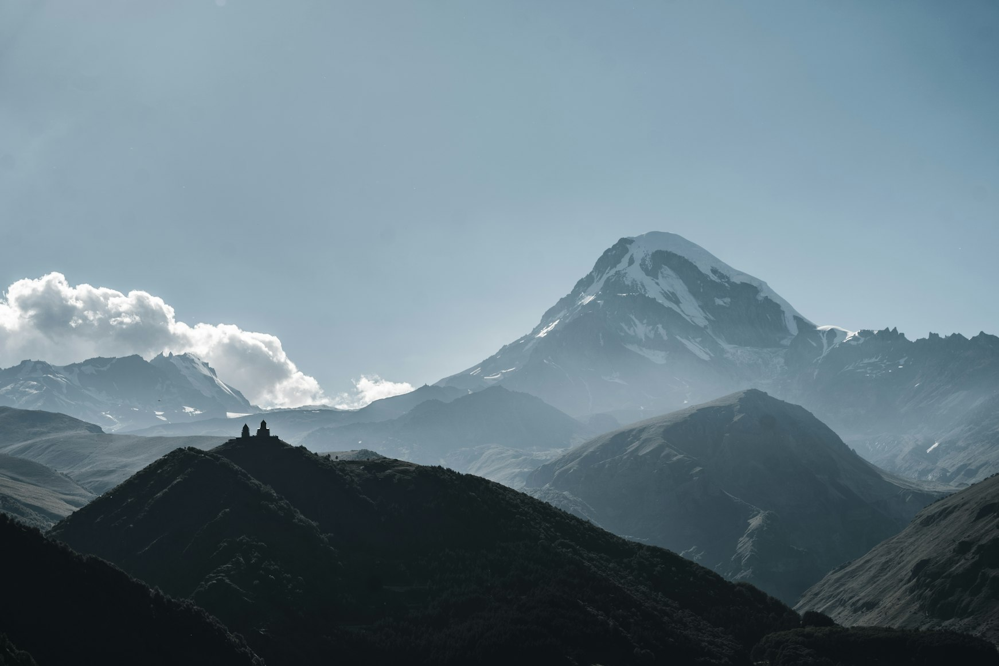
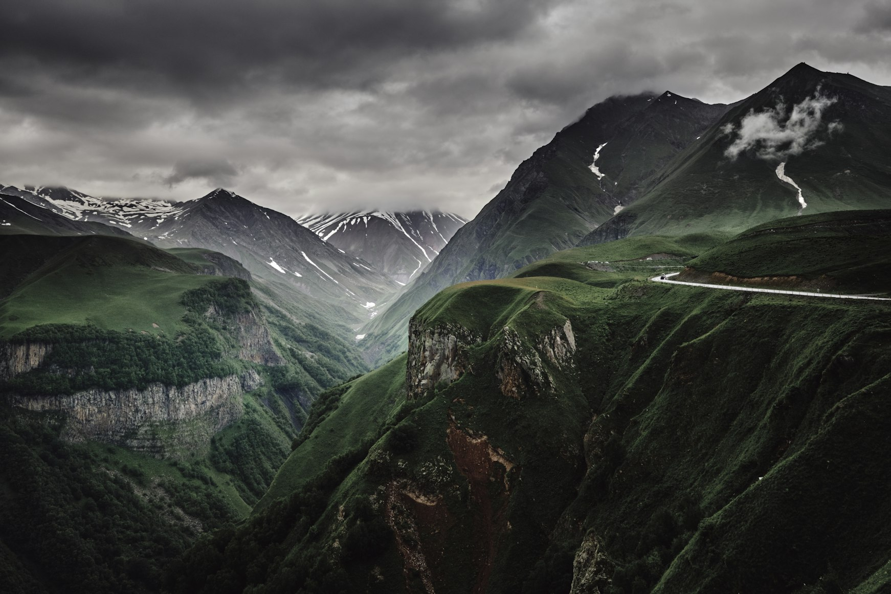

The further you drive from Tbilisi the more the landscape seems to outgrow the country itself. Roads begin disappearing into mountain weather. Villages become scattered and quiet. Petrol stations grow rarer. The Caucasus slowly takes control of the horizon until human infrastructure starts feeling temporary against it.
At some point Georgia stops feeling like a destination.
And starts feeling like open space.
The Road Into Tusheti
The road to Tusheti does not ease you into the landscape gently.
It climbs violently.
The Abano Pass twists upward through fog, loose gravel, waterfalls cutting across the road, and cliffs without guardrails. Old trucks move slowly around blind corners while clouds drift low enough to erase entire sections of the mountainside.
There are moments when the road becomes so narrow and empty that modern life begins feeling very far away.
Then suddenly the valley opens.

Stone towers appear in the distance. Horses move across green slopes without fences. Rivers cut through enormous silence.
Tusheti does not feel untouched.
It feels unreachable.
Even now entire villages remain isolated for months during winter once snow closes the mountain roads. Supplies arrive late. Weather still controls movement. Satellite dishes sit beside medieval towers as though two centuries accidentally collided in the same landscape.
And perhaps that is what freedom feels like there.
Not comfort.
Not escape.
But the absence of constant systems surrounding you.
Svaneti and the Vertical World
In Svaneti the landscape rises almost aggressively.
Villages seem pressed between glaciers and clouds. Ancient stone towers stand against mountains so steep they barely appear habitable. In places like Mestia or Ushguli weather changes faster than rhythm itself — sunlight one moment, fog swallowing entire valleys the next.

The scale distorts everything.
Dogs barking somewhere below the road. Tiny figures carrying wood across wet grass. A church barely visible above the tree line. Human life feels reduced to fragments inside a much larger environment.
European mountain regions often feel organized around tourism.
Svaneti still feels organized around survival.
Mudslides close roads. Snow isolates villages. Rivers flood without warning. The mountains remain physically dominant in a way much of Europe no longer allows.
And because of that the freedom there feels different.
More physical.
Less curated.
The Strange Silence of Vashlovani
Most people do not expect eastern Georgia to look almost desertlike.
Which is exactly why Vashlovani National Park feels so disorienting.
The landscape flattens into pale yellow plains and cracked earth stretching toward Azerbaijan. Dry wind moves through sparse trees. Eagles circle silently above canyons where almost no human sound exists for hours at a time.

Driving through Vashlovani feels less like the Caucasus and more like crossing some forgotten borderland between continents.
There are roads where you may not see another vehicle all day.
No cafés.
No hotels.
No music drifting from restaurants.
Only dust, heat, distant cliffs, and the sound of tires moving across dry ground.
In a world increasingly designed to remove uncertainty from travel, places like Vashlovani feel emotionally rare.
Not because they are extreme.
Because they still allow emptiness to exist.
Kazbegi and the Scale of Weather
Tourists photograph Gergeti Trinity Church constantly now.
But photographs rarely capture what the place actually feels like.
Especially when weather moves through the mountains.
Clouds close around Mount Kazbek so quickly that the entire landscape changes within minutes. One moment the mountain dominates everything. The next it disappears completely behind gray movement and cold rain.

Below, trucks crawl slowly along the Georgian Military Highway carrying cargo between Europe and Russia while stray dogs sleep beside roadside concrete barriers.
The church itself remains small against the scale surrounding it.
That is what stays with people after leaving Kazbegi.
Not beauty exactly.
Scale.
The realization that the mountains do not notice human presence very much.
Between Places Georgia Feels Freest
Some of the strongest moments in Georgia happen between destinations.
Not at famous viewpoints.
Not inside hotels.
But on the road itself.
A roadside khinkali restaurant somewhere after dark where truck drivers eat silently beneath fluorescent lights. Soviet bus stops abandoned beside rivers. Cows standing in the middle of highways without urgency. Shepherds moving through fog above empty valleys.
Georgia often feels most alive while in motion.
The country still contains long stretches where the landscape has not been fully optimized for tourism. Roads break apart. Weather interrupts plans. Villages appear without warning and disappear again behind mountains twenty minutes later.
That unpredictability changes the emotional texture of travel.
You stop moving efficiently.
You begin paying attention.
Why Georgia Feels Larger Than It Is
On a map, Georgia is not a large country.
Emotionally, it often feels enormous.
Partly because the geography changes so violently. Snow mountains. Semi-deserts. Black Sea humidity. Alpine forests. Dry eastern plains.

But also because the infrastructure never fully overpowers the landscape.
In many countries, roads, resorts, and urban expansion eventually shrink nature psychologically. The environment becomes organized, accessible, softened.
In Georgia, the mountains still interrupt things.
Storms still isolate roads. Landslides still alter routes. Weather still matters.
The landscape has not entirely surrendered itself to convenience.
And perhaps that is why freedom feels easier to find there.
Not because Georgia lacks modernity.
But because the natural world still feels larger than the systems built inside it.
Returning to the City
Eventually every road leads back down.
Phone signal returns first. Then traffic. Billboards. Supermarkets. Apartment blocks. The familiar rhythm of notifications and movement.

And only then do many people realize what felt different in the Georgian highlands.
It was not simply the scenery.
It was the rare sensation that the world had briefly become bigger than human organization again.
In few places left in Europe or the Caucasus does that feeling survive so completely.
In Georgia, it still does.
Practical Notes for Traveling Through Georgia
Distances in Georgia Feel Longer Than They Look
Georgia is not a large country on a map, but mountain roads change the rhythm of movement completely.
Routes that appear short often take far longer than expected once weather, landslides, livestock, road conditions, and altitude enter the equation. In regions like Tusheti or Svaneti, travel depends heavily on season and weather stability. Certain roads close entirely during winter and remain unpredictable well into spring.
The country works best when you stop treating movement efficiently.
Leave time for delays, fog, roadside stops, and unplanned detours. Much of Georgia’s atmosphere exists between destinations rather than inside them.
The Best Season Depends on the Landscape
Georgia changes dramatically with altitude.
Mountain regions remain inaccessible for much of the colder year, while eastern semi-desert areas become almost unbearably hot during midsummer afternoons. Autumn is often the most balanced season across the country: clear mountain visibility, dry roads, cool evenings, and fewer domestic tourists.
Spring brings intense green landscapes and fast-moving weather systems across the Caucasus. Summer opens remote highland roads but also brings afternoon storms and heavier traffic toward popular regions like Stepantsminda and Svaneti.
Winter transforms the mountains completely. Entire valleys become quieter, slower, and more isolated once snow begins controlling movement again.
Roads Matter More Than Attractions
Some of the strongest memories in Georgia are rarely famous landmarks.
A roadside bakery in the rain. Truck drivers eating khinkali after dark. Fog moving across empty mountain roads. An abandoned Soviet bus stop beside a river.
The country still contains long stretches where infrastructure has not fully reshaped the landscape around it. That unpredictability is part of what gives Georgia its emotional texture.
Driving slowly often reveals more than arriving quickly.
Where to Stay
In cities like Tbilisi and Batumi, accommodation ranges from restored old apartments to modern hotels and design guesthouses.
Remote mountain regions operate differently.
Guesthouses in highland villages are usually simple, warm, and closely tied to local family life rather than polished tourism standards. Electricity outages still happen occasionally in isolated areas. Heating systems vary. Wi-Fi can become unreliable once weather shifts.
And strangely, those imperfections often become part of the memory.
Some of Georgia’s most memorable evenings happen during storms in remote villages where the power flickers briefly, dogs bark somewhere below the hills, and clouds completely erase the mountains outside the window.
Before Georgia Changes
Parts of Georgia still feel emotionally larger than tourism.
That may not remain true forever.
Roads improve every year. More mountain regions become accessible. Drone footage and social media continue reshaping once-isolated landscapes into recognizable destinations.
But for now, Georgia still preserves something increasingly difficult to find in Europe and the Caucasus:
the feeling that nature remains slightly more powerful than the systems built around it.
And perhaps that is what people remember most after leaving.